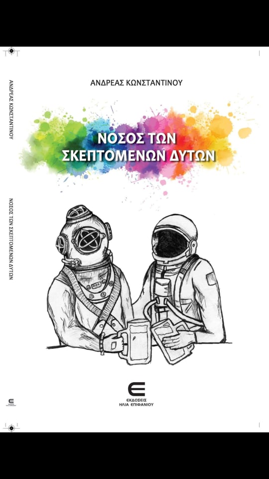

I am a PhD student in Physics at the University of Cyprus, working on hyperon physics on lattice QCD. My research contains compact-star physics, general relativity, lattice QCD, theoretical and computational physics.
I completed my BSc in Physics at the University of Cyprus, where my undergraduate thesis focused on the search for a charged Higgs boson at the LHC. I earned my MSc in Physics from the University of Alberta, where I studied rapidly rotating neutron stars and universal relations for the increase of mass and radius due to rotation.
My current interests include compact stars, hyperon physics and lattice QCD.
General RelativityNeutron StarsLattice QCDTheoretical PhysicsComputational Physics
Particle Physics
Collider physics and lattice-QCD work, ordered from the most recent output on the left to earlier projects on the right.
Under review
Scalar and Tensor Form Factors for Λ → pℓν̄ℓ from Lattice QCD
C. Alexandrou, S. Bacchio, A. Konstantinou, E. Vakana · arXiv:2604.16025 · 2026
Abstract
We present a determination of the scalar and tensor Λ → p transition form factors using lattice QCD. These form factors are relevant for semileptonic hyperon decays in the presence of extensions of the Standard Model that include scalar and tensor interactions. The calculation is carried out using a gauge ensemble of twisted mass fermions at the physical pion mass, following the same strategy as our recent study on vector and axial form factors for the same transition. We provide the complete set of form factors as functions of q² employing a model-independent parametrization. We examine their impact on searches for non-standard charged-current interactions via the muon-to-electron decay-rate ratio Rμe=Γ(Λ→pμν̄μ)/Γ(Λ→peν̄e), where scalar and tensor contributions enter linearly and are helicity-enhanced relative to the electron channel. We compare this first-principles prediction for the decay-rate ratio with recent experimental measurements, thereby enabling improved constraints on non-standard charged-current interactions.
Recent results on the Λ → pℓν̄ℓ semileptonic decay
S. Bacchio, A. Konstantinou · arXiv:2602.16560 · 2026
Abstract
We present a lattice-QCD determination of the Λ → p vector and axial-vector form factors, providing theoretical input for studies of the semileptonic decay Λ → pℓν̄ℓ. The calculation is carried out on a single gauge ensemble with physical light, strange, and charm quark masses and delivers a precise determination of the complete set of transition form factors, including second-class contributions. Using these form factors, we compute decay rates for both the electronic and muonic channels, as well as their ratio, which offers a sensitive test of lepton-flavor universality and possible non-standard scalar or tensor interactions. This decay mode provides a theoretically well-controlled avenue for extracting the CKM matrix element |Vus| from the baryon sector. Our estimate of |Vus| is obtained by combining our recent lattice-QCD results with recent measurements of the relevant branching fraction reported by BESIII and LHCb.
Study of the Λ → pℓν̄ℓ Semileptonic Decay in Lattice QCD
S. Bacchio, A. Konstantinou · Phys. Rev. Lett. 135, 231901 · arXiv:2507.09970 · 2025
Abstract
We present the first lattice QCD determination of the Λ → N vector and axial-vector form factors, which are essential inputs for studying the semileptonic decay Λ → pℓν̄ℓ. This channel provides a clean, theoretically controlled avenue for extracting the CKM matrix element |Vus| from the baryon sector. Our analysis uses a gauge ensemble with physical light, strange, and charm quark masses and yields the most precise determination to date of the full set of transition form factors — including second-class contributions — as well as the associated couplings, radii, and the ratio of muon-to-electron decay rates, an observable sensitive to possible non-standard scalar and tensor interactions. We compare our non-perturbative results with next-to-next-to-leading order expansions in the small parameter δ=(mΛ−mN)/mΛ≈0.16. We find that the common phenomenological approximation of neglecting the q²-dependence of the form factors leads to a ~4% deviation in the decay rate. This underscores the critical importance of precise, fully non-perturbative form factor inputs for achieving the sub-percent precision targets of upcoming experimental programs.
Add project image hereScreenshot from 2024-01-19 13-39-24.png
CERN Summer Studentship
Muon and Electron Reconstruction Efficiency at LHCb
CERN · 2022
This project studied how electron and muon reconstruction efficiency changes with the particle kinematics, track types, and kinematic cuts at LHCb. Because electrons lose energy through bremsstrahlung in detector material, reconstruction can become difficult or impossible. Simulated data were used to study how binning choices affect efficiency plots and to optimize the extraction of useful information without creating bins with low statistics.
The thesis searched for a charged Higgs boson in LHC data in the channel H+ → H0W+ → ℓ + τh + x. The work used Monte Carlo simulation, event reconstruction, and CMS 2016 data at 13 TeV with integrated luminosity 35.8 fb−1. The analysis compared simulated signal and background processes to data and used transverse-mass fits to constrain the amount of signal allowed by the selected cross section.
Compact-star work, ordered from the most recent output on the left to earlier work on the right.
Peer-reviewed article
Rotating Neutron Stars with Dark Matter Halos
S. Shawqi, A. Konstantinou, S. M. Morsink · JCAP 04, 011 · arXiv:2508.18434 · 2026
Abstract
If dark matter exists in halos around rotating neutron stars, it will be essential to understand the effects of rotation on the distribution of dark matter and baryonic matter in the stars to interpret observations. In this work, we construct rapidly rotating dark-matter-admixed neutron stars with dark matter halos using the two-fluid approximation, where the baryonic matter and dark matter interact only through gravity. Our goal is to describe rapidly rotating millisecond-period dark-matter-admixed neutron stars spun up by the accretion of baryonic matter from a zero angular momentum state. We extend the Rapidly Rotating Neutron Star code to compute axisymmetric configurations in which the baryonic matter rotates rigidly while the dark matter remains torque-free and differentially rotates through the frame-dragging of spacetime. For the first time, we examine in detail local and global definitions of mass in general relativity for two-fluid systems, showing how their differences affect the interpretation of baryonic and dark component masses. We compute energy density and frame-dragging frequency profiles for dark-matter-admixed neutron stars with three different characteristic dark matter halos. We demonstrate that rapid baryonic-matter rotation reduces dark matter halo sizes if central energy densities are kept constant between non-rotating and rotating models. We also construct sequences to create mass and radius curves and compare rotating and non-rotating cases. Finally, we quantify deviations in the spacetime metric outside the baryonic surfaces caused by dark matter halos. These results provide a framework for assessing the observational consequences of dark matter halos around rapidly rotating neutron stars.
The Effect of a Self-bound Equation of State on the Structure of Rotating Compact Stars
A. Konstantinou · Astrophys. J. 997, 55 · arXiv:2512.12298 · 2026
Abstract
This paper investigates how a self-bound equation of state, which describes strange quark stars, affects the rotational properties of compact stars, focusing on deviations from universal relations governing gravitational mass and radius changes due to rotation. The analysis reveals significant deviations in stars with higher surface-to-center total energy-density ratios, εs/(εc+c²Pc), challenging the established universal relations. For Newtonian stars, hydrostatic equilibrium ensures that the difference between the gravitational potential at the center, Φc, and at the poles, Φp, remains constant within sequences of rotating neutron stars characterized by the same central and polar specific enthalpy. Combined with the scaling Φ ∝ Re², where Re denotes the equatorial radius, this condition naturally leads to a quasi-universal behavior in the rotational change of radius within these sequences. Similarly, in general relativistic stars, hydrostatic equilibrium maintains that ΦpGR−ΦcGR remains unchanged within these sequences, where ΦGR is one of the metric potentials. Inspired by this theoretical framework, a toy model has been developed to capture the dependence of gravitational mass and radius deviations on the surface-to-central total energy density ratio. Subsequently, an improved set of empirical universal relations has been proposed for accurately modeling rapidly rotating compact stars with self-bound equations of state.
Rotational Enhancement and Stability of Proto-quark Stars during Thermal Evolution
A. Issifu, A. Konstantinou, P. Thakur, T. Frederico · arXiv:2601.13941 · 2026
Abstract
We present the first systematic study of rigidly rotating protoquark stars based on isentropic equations of state within the density-dependent quark mass framework. Using a quasi-static equilibrium approach, we follow the Kelvin–Helmholtz evolution from hot, lepton-rich matter to a cold, catalyzed quark star. Rotation substantially enhances the maximum stable mass by up to ~40%, equatorial radius, and key rotational observables, with the ratio of rotational kinetic to gravitational potential energy reaching 0.18–0.19 near the Keplerian limit, indicating a heightened susceptibility to gravitational-wave-emitting instabilities. Thermal evolution introduces a clear ordering: all stellar properties peak during the lepton-rich stages and decrease monotonically as the star cools. Compared to hadronic stars, rotating protoquark stars exhibit larger radii, higher moments of inertia, and stronger quadrupolar deformation, producing a distinct signature in the mass-radius-spin plane that can accommodate objects such as HESS J1731–347 and PSR J0740+6620. These results demonstrate that future multimessenger observations must account for both thermal history and rotation to robustly identify quark matter in compact stars.
Rotational Effects in Quark Stars: Comparing Different Models
A. Issifu, A. Konstantinou, F. M. da Silva, T. Frederico · arXiv:2511.20477 · 2025
Abstract
We investigate the rotational properties of self-bound strange quark stars using two representative quark matter equations of state: the vector MIT bag model and the density-dependent quark mass model. Through general-relativistic calculations of uniformly rotating sequences, we analyze their mass-radius relations, moments of inertia, quadrupole moments, surface redshifts, Keplerian frequencies, and energy components. A central result of this work is the full decomposition of the stellar energy budget in rotating strange stars, separating gravitational, internal, rotational, and binding energy contributions. Rotation amplifies the intrinsic equation-of-state differences: the MIT model supports more massive compact stars with larger moments of inertia and greater resistance to deformation, while the density-dependent quark mass model produces larger radii and less massive stars limited by mass-shedding at lower frequencies. Combined measurements of mass, radius, and frequency can thus break the equation-of-state degeneracy; massive, rapidly rotating pulsars favor MIT-like equations of state, whereas larger radii in canonical stars point to a density-dependent quark mass-like model. These rotational observables, soon to be tightly constrained by NICER and next-generation gravitational-wave detectors, offer a means to test the existence and composition of self-bound quark matter in compact stars.
Rotating Protoneutron Star Admixed with Mirror Dark Matter: A Two-fluid Approach
A. Issifu, A. Konstantinou, P. Thakur, T. Frederico · Phys. Rev. D 112, 103026 · arXiv:2507.20823 · 2025
Abstract
This work investigates the impact of mirror dark matter on the global properties of rotating neutron stars across evolutionary stages, from hot, lepton-rich protoneutron stars to cold, catalyzed neutron stars along the Kelvin–Helmholtz timescale. The baryonic matter is modeled using a relativistic mean-field approach with density-dependent couplings, while the dark sector mirrors the visible sector with analogous thermodynamic conditions. Using a two-fluid formalism with purely gravitational dark matter-baryonic matter interaction, we find that rotation enlarges the star, whereas dark matter admixture increases compactness and enhances gravitational stability. However, increased compactness due to dark matter lowers the threshold for rotational instabilities, making dark-matter-admixed stars more susceptible. Rotation decreases central temperature behavior by redistributing thermal energy over a larger volume and reducing central density, while dark matter raises temperatures by deepening the gravitational potential and increasing thermal energy. Stars become more prone to collapse and rotational instabilities as frequency rises and the polar-to-equatorial radius ratio decreases, especially near the Keplerian limit. Dark-matter-admixed stars also show higher surface gravitational redshifts due to their compactness. These findings highlight competing effects of rotation and dark matter on neutron-star thermal evolution, structure, and observables, potentially offering indirect probes of dark matter within neutron stars.
The Effect of a Dark Matter Core on the Structure of a Rotating Neutron Star
A. Konstantinou · Astrophys. J. 968, 83 · arXiv:2405.01487 · 2024
Abstract
Neutron stars represent unique laboratories, offering insights into the physics of supranuclear-density matter and serving as potential hosts for dark matter. This study explores the impact of dark matter cores on rapidly rotating neutron stars through the two-fluid approximation, assuming minimal interaction between baryonic matter and dark matter. The investigation employs phenomenological models for fermionic and bosonic dark matter, revealing that universal relations governing mass and radius changes due to rotation remain largely unaffected in the presence of a dark matter core. Specifically, for a 5% dark matter mass fraction, the percent deviations in total mass, the baryonic equatorial radius, and polar-to-equatorial baryonic radius ratio are within 3.9%, 1.8%, and 1.4%, respectively. These findings suggest that the universal relations governing neutron star shape can be utilized to infer constraints on the properties of dark matter cores even in cases where the dark matter significantly softens the neutron star equation of state.
Universal Relations for the Increase in the Mass and Radius of a Rotating Neutron Star
A. Konstantinou, S. M. Morsink · Astrophys. J. 934, 139 · arXiv:2206.12515 · 2022
Abstract
Rotation causes an increase in a neutron star mass and equatorial radius. The mass and radius depend sensitively on the unknown equation of state of cold, dense matter. However, the increases in mass and radius due to rotation are almost independent of the equation of state. The equation-of-state independence leads to the idea of neutron star universality. In this paper, we compute sequences of rotating neutron stars with constant central density. We use a collection of randomly generated equations of state to construct simple correction factors to the mass and radius computed from the equations of hydrostatic equilibrium for non-rotating neutron stars. The correction factors depend only on the non-rotating star mass and radius and are almost independent of the equation of state. This makes it computationally inexpensive to include observations of rotating neutron stars in equation-of-state inference codes. We also construct a mapping from the measured mass and radius of a rotating neutron star to a corresponding non-rotating star. The mapping makes it possible to construct a zero-spin mass-radius curve if the masses and radii of many neutron stars with different spins are measured. We show that the changes in polar and equatorial radii are symmetric, in that the polar radius shrinks at the same rate that the equatorial radius grows. This symmetry is related to the observation that the equatorial compactness is almost constant on one of the constant-density sequences.
Universal Relations for the Increase in the Mass and Radius of a Rotating Neutron Star
University of Alberta · 2022
The thesis studied rapidly rotating neutron stars and universal relations for the increase in mass and radius caused by rotation. It showed that the rotational change in mass and radius can be described in a way that is nearly independent of the dense-matter equation of state, making rotating-star corrections more practical for equation-of-state inference.
Beyond research, I enjoy science outreach, writing, game design, and creative projects. I currently serve as the National Outreach Coordinator of Cyprus for the International Astronomical Union Office for Astronomy Outreach, in collaboration with the Cyprus Space Exploration Organization.

Νόσος Των Σκεπτόμενων Δυτών
A small book about physics and life, written in Greek. ISBN: 978-9925-581-46-7.
Lympia Texas Villagers Outlaw
A small video game based on my village, Lympia, Cyprus. Graphics by Evelyn Toumazou.
I give presentations about the solar system for children and organize annual physics seminars for the general public, with donations supporting the Karaiskakio Foundation.
YouTube Channel
Science outreach and public-facing physics content.